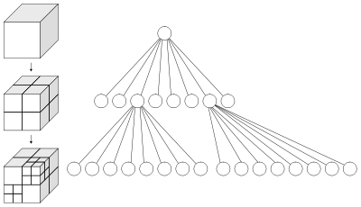

11: special purpose trees
Digital Search Trees | Binary Tries | Multiway Tries | R-Trees | Hilbert Space Filling CurvesHilbert R-Trees | KD-Trees | KDB-Trees | Quad Trees | Octrees | Interval Trees | Kth Min Trees
Digital Search Trees [1]
Digital Search Trees are Binary Search Trees that are guarenteed to have a relatively small height and require no balancing operations.In a Digital Search Tree:
- The left child of a node has the next bit 0 (next MSB or next LSB, depending on implementation)
- The right child of a node has the next bit 1
| ASCII Character | Binary Representation |
| A | b01000001 |
| E | b01000101 |
| S | b01010011 |
| C | b01000011 |
| H | b01001000 |
| R | b01010010 |
| X | b01011000 |
| N | b01001110 |
The max height in a digital search tree is O(log num_key_bits) so the max search time is the same.
A simple digital search tree does not allow for an in-order key traversal operation.
Binary Tries
Binary Tries solve the problem in digital search trees where in-order traversal is not possible.Insert L (0b01001100):
Insertion algorithm:
1:
algorithm
binaryTrieInsertion(
Node
root,
long
key)
{
2:
int
digit
=
0;
3:
Node
curr
=
root;
4:
Node
prev
=
NULL;
5:
6:
//handle root case
7:
8:
while
(
true)
{
9:
if
(
curr
is
null)
{
10:
curr
=
new
Node(
key)
;
11:
make
curr
have
a
value;
12:
make
correct
prev
left/right
pointer
point
to
curr;
13:
return
;
14:
}
15:
if
(
curr
is
a
leaf)
{
16:
Node
temp
=
new
Node(
key)
;
17:
make
temp
have
a
value;
18:
Node
new_node
=
split(
temp,
curr,
digit)
;
19:
make
correct
prev
left/right
pointer
point
to
new_node;
20:
}
21:
prev
=
curr;
22:
curr
=
curr->left
if
value
of
key
at
digit
is
0,
otherwise
it
is
equal
to
curr->right;
23:
++digit;
24:
}
25:
}
26:
27:
algorithm
split(
Node
left,
Node
right,
int
digit)
28:
{
29:
Node
new_node
=
new
Node(
)
;
30:
if
(
left->value
and
right-value
are
different
at
digit)
{
31:
setup
new_node->left
and
new_node->right
to
point
(
correctly)
to
left
and
right;
32:
}
else
{
33:
if
(
both
left->value
and
right->value
are
0
at
digit)
{
34:
new_node->setLeft(
split(
left,
right,
digit+1)
;
35:
}
else
{
36:
new_node->setRight(
split(
left,
right,
digit+1)
;
37:
}
38:
}
39:
}
Multiway Tries
In Multiway Tries, there are 'R' links rather than 2.- Supports search in time proportional to the length of the key
- A naive implementation has R links for each key, so there is a time/space tradeoff here.
R-Trees [3][5]

(image from wikipedia [5])
R-Trees are used to enable efficient search of 2D spatial data. The non-leaf nodes of a b-tree contain rectangle coordiantes of child nodes. (The r in r-tree is for the r in rectangle).
Insertion:
- Insertion is done in a rectangle that needs the least enlargement (or some other heuristic)
- R* tree topological split [6] gives the best tree for spatial map applications. Here, when a node is full, a portion of the nodes are removed and reinserted. Only one reinsert per level is allowed to prevent an infinite loop of overflows.
Hilbert R-Trees [7]
Hilbert Space Filling Curve:(image from wikipedia [7])
The Hilbert Value is the distance along the space filling curve. See [8] for an efficient way to compute the distance. Brute force methods quickly run out of 4GB of ram.
Hilbert Pack Algorithm for bulk insertion of rectangles into R-Tree. (bulk insertion is non-dynamic)
- Assign the hilbert value to each rectangle
- Sort rectangles according to hilbert value
- Create leaf nodes: Evenly divide rectangles based on hilbert value
- Create inner nodes: Recursively build the tree from the leaf nodes using the extents of the children. The multiple children of one parent node are chosen using the time-based ordering of creation. The time based ordering is just the current value of an integer counter.
Calculating the distance along a Hilbert SFC [8]
- For all points, find max_x and max_y.
- Find the max of max_x and max_y and call this max_xy.
- If max_xy is a power of two, leave it. Else make it the next higher power of two.
- For each point:
- Initialize w to be max_xy / 2. Dist = 0.
- Find the quadrant on a hilbert curve that the point is in.
- Dist += (quadrant * w * w)
- Calculate xnew and ynew according to the formulas
- w becomes w / 2
- Repeat steps 2 to 5 until w becomes 0
| Quadrant | x_new | y_new |
| 0 | y | x |
| 1 | x | y - w |
| 2 | x - w | y - w |
| 3 | w - y - 1 | w * 2 - x - 1 |
Example with coordinates: (4, 0):
(image adapted from wikipedia [7])
- Quadrant = 3. Dist = 3 * w * w = 3 * 4 * 4
- Apply table: x,y=(3, 3)
- Quadrant = 2. Dist += 2 * w * w = 2 * 2 * 2
- Apply table: x,y=(1, 1)
- Quadrant = 2. Dist += 2 * w * w = 2 * 1 * 1
- Dist = 58
k-d trees [9]
k-d trees support average O(lgn) time search/insert/delete for a k-dimensional space. (k-d is short for k-dimensional).| Points in a 2D space: | The data structure in memory: |
 |
Insertion:
- Insertion is done like a standard unbalanced binary tree
void insert(Point p, TreeNode * curr, bool is_x){
if(is_x){
if(p.x < curr->getX()){
follow_left_node(!is_x);
} else {
follow_right_node(!is_x);
}
} else {
if(p.y < curr->getY()){
follow_left_node(!is_x);
} else {
follow_right_node(!is_x);
}
}
}
K-D-B Trees [4]
(image from [4])
In K-D-B Trees, the basic structure of inner nodes is a B-Tree. The leaf nodes contain k-dimensional points.
- On insertion: The regular B-Tree algorithm is used, a leaf node is split into two when full and the splits recursively go up.
- Unlike R-Trees, no rectangles overlap
QuadTree [10]
QuadTrees have fixed partitions suitable for representing 2-dimensional quadtrants.- Each node always has space for exactly four children
(image from wikipedia [10])
Octree [11]
Octrees are just like Quadtrees but each node has space for eight children.

(image from wikipedia [11])
(image from wikipedia [11])
void insert(Point p, Octree * curr){
int quad = findQuad(p, curr);
if(curr has no child at quad){
insert child into curr->children[quad];
} else {
insert(p, curr->children[quad]);
}
}
Octrees are often used in 3D game engines to partition the visible scene into parts that need rendering.
Interval Trees
Interval Trees are ways of storing intervals: [l, h] = { x: l <= x <= h};- Each node has a low_endpoint field
- Each node has a high_endpoint field
- Each node has the max of the high_endpoints of itself and its children
- Each node has a left subtree where all intervals have low_endpoints <= curr_low_endpoint
- Each node has a right subtree where all intervals have low_endpoints > curr_low_endpoint
Insertion
- Start:
- Insert [6 25]
- Fixup the max high_endpoints on the way up from the recursion
- Fixup the max high_endpoints on the way up from the recursion
Kth-Min Tree
- Start: curr = root. Looking for k=5.
- count_left = countNodes(curr->getLeft()) = 6; k < count_left. findKth(curr->getLeft(), k).
- count_left = 2. k > count_left. findKth(curr->getRight(), k - count_left - 1)

- count_left = 1. k = 2. k > count_left. findKth(curr->getRight(), k - count_left - 1)

- count_left = 0. k = 0. k == count_left, return curr value
References
- Robert Sedgewick, "Algorithms in C++, Parts 1-4", Third Edition. ISBN: 0-201-35088-2, pages 560-573
- http://en.wikipedia.org/wiki/Red%E2%80%93black_tree
- "R-trees: A dynamic index structure for spatial searching", A. Guttman
- "The K-D-B tree: A search structure for large multi-dimensional dynamic indexes". J.T. Robinson
- http://en.wikipedia.org/wiki/R-tree
- http://en.wikipedia.org/wiki/R*_tree
- http://en.wikipedia.org/wiki/Hilbert_R-tree
- N. Chen, N. Wang, and B. Shi, "A new algorithm for encoding and decoding the Hilbert order," Softw. Pract. Exper., vol. 37, 2007, pp. 897-908.
- http://en.wikipedia.org/wiki/K-d_tree
- http://en.wikipedia.org/wiki/Quadtree